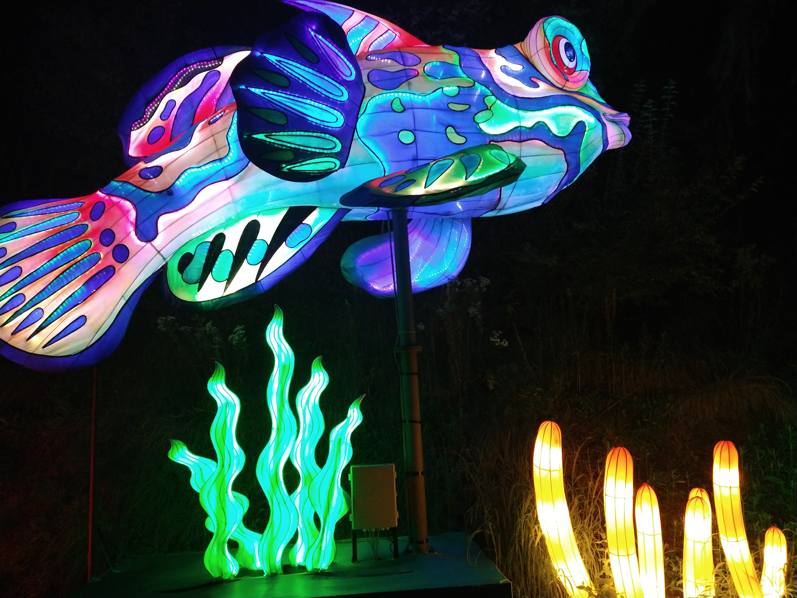

Preston Pancakes in the Park! 9:00 a.m. Saturday at the city park pavilion.
Gallery
Galleria of Images with Descriptions
Snowing in our backyard during Winter.Close to Spring time.

Rainbow fish lantern at the PPG Zoo & Aquarium during Autumn when
it starts to get cold and windy.
Niagara waterfalls during the Summer when hot and sunny.Geese at Cedar Point amusement park during partially cloudy.Hot sunny day at Preston, Idaho during the clear Summer days.Spring time is near in Franklin County.